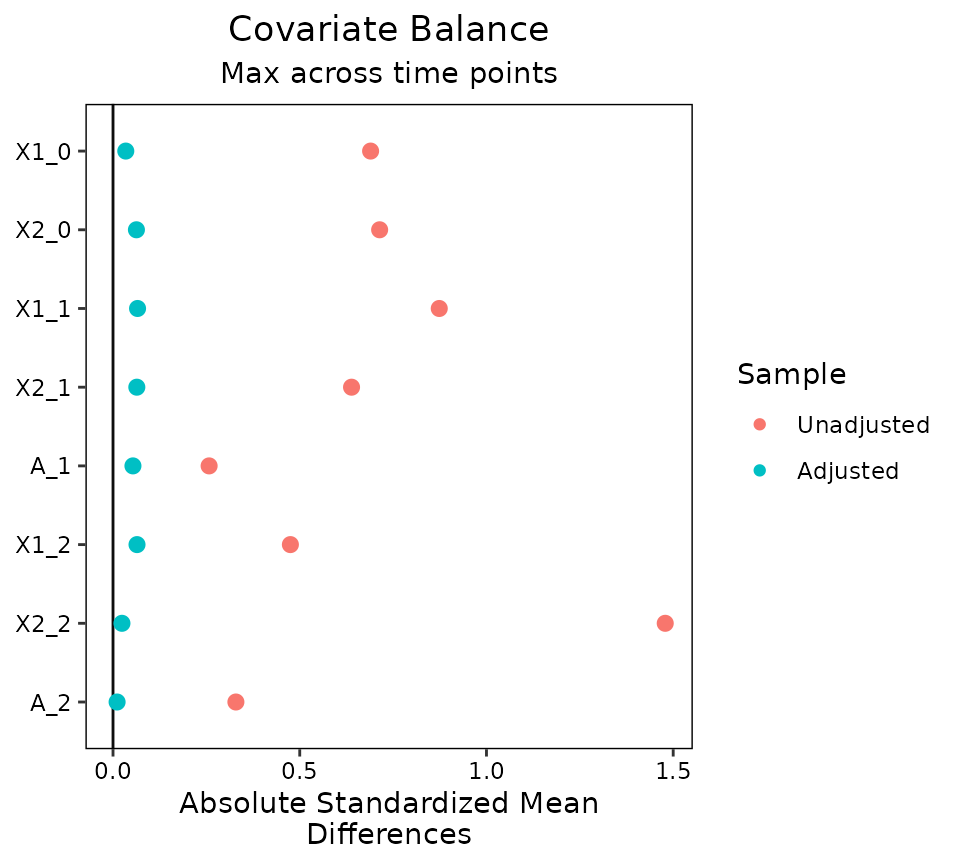

Using cobalt with Longitudinal Treatments
Noah Greifer
2026-01-29
Source:vignettes/longitudinal-treat.Rmd
longitudinal-treat.RmdThis is an introduction to the use of cobalt with longitudinal treatments. These occur when there are multiple treatment periods spaced over time, with the potential for time-dependent confounding to occur. A common way to estimate treatment effects in these scenarios is to use marginal structural models (MSM), weighted by balancing weights. The goal of applying weights is to simulate a sequential randomization design, where the probability of being assigned to treatment at each time point is independent of each unit’s prior covariate and treatment history. For introduction to MSMs in general, see Thoemmes and Ong (2016), VanderWeele, Jackson, and Li (2016), Cole and Hernán (2008), or Robins, Hernán, and Brumback (2000). The key issue addressed by this guide and cobalt in general is assessing balance before each treatment period to ensure the removal of confounding.
In preprocessing for MSMs, three types of variables are relevant: baseline covariates, treatments, and intermediate outcomes/time-varying covariates. The goal of balance assessment is to assess whether after preprocessing, the resulting sample is one in which each treatment is independent of baseline covariates, treatment history, and time-varying covariates. The tools in cobalt have been developed to satisfy these goals.
The next section describe how to use cobalt’s tools to
assess balance with longitudinal treatments. First, we’ll examine an
example data set and identify some tools that can be used to generate
weights for MSMs. Next we’ll use bal.tab(),
bal.plot(), and love.plot() to assess and
present balance.
Setup
We’re going to use the msmdata data set in the
WeightIt package.
## X1_0 X2_0 A_1 X1_1 X2_1 A_2 X1_2 X2_2 A_3 Y_B
## 1 2 0 1 5 1 0 4 1 0 0
## 2 4 0 1 9 0 1 10 0 1 1
## 3 4 1 0 5 0 1 4 0 0 1
## 4 4 1 0 4 0 0 6 1 0 1
## 5 6 1 1 5 0 1 6 0 0 1
## 6 5 1 0 4 0 1 4 0 1 0We have the variables Y_B, the outcome;
X1_0 and X2_0, the baseline covariates;
X1_1 and X2_1, time-varying covariates
measured after treatment period 1; X1_1 and
X2_1, covariates measured after treatment period 2; and
A_1, A_2, and A_3, the treatments
at each of the three treatment periods.
The goal of balance assessment in this scenario is to ensure the following:
-
A_1is independent fromX1_0andX2_0 -
A_2is independent fromX1_0,X2_0,A_1,X1_1, andX2_1` -
tx3is independent fromX1_0,X2_0,A_1,X1_1,X2_1,A_2,X1_2, andX2_2
Note these conditions are different from and weaker than those
described by Jackson (2016).
See his confoundr package for implementing the diagnostics
he describes.
bal.tab()
To examine balance on the original data, we can specify the
treatment-covariate relationship we want to assess by using either the
formula or data frame interfaces to bal.tab(). The formula
interface requires a list of formulas, one for each treatment, and a
data set containing the relevant variables. The data set must be in the
“wide” setup, where each time point receives its own columns and each
unit has exactly one row of data. The formula interface is similar to
the WeightIt input seen above. The data frame interface
requires a list of treatment values for each time point and a data frame
or list of covariates for each time point. We’ll use the formula
interface here.
bal.tab(list(A_1 ~ X1_0 + X2_0,
A_2 ~ X1_1 + X2_1 +
A_1 + X1_0 + X2_0,
A_3 ~ X1_2 + X2_2 +
A_2 + X1_1 + X2_1 +
A_1 + X1_0 + X2_0),
data = msmdata)## Balance summary across all time points
## Times Type Max.Diff.Un
## X1_0 1, 2, 3 Contin. 0.6897
## X2_0 1, 2, 3 Binary 0.3253
## X1_1 2, 3 Contin. 0.8736
## X2_1 2, 3 Binary 0.2994
## A_1 2, 3 Binary 0.1267
## X1_2 3 Contin. 0.4749
## X2_2 3 Binary 0.5945
## A_2 3 Binary 0.1620
##
## Sample sizes
## - Time 1
## Control Treated
## All 3306 4194
## - Time 2
## Control Treated
## All 3701 3799
## - Time 3
## Control Treated
## All 4886 2614Here we see a summary of balance across all time points. This
displays each variable, how many times it appears in balance tables, its
type, and the greatest imbalance for that variable across all time
points. Below this is a summary of sample sizes across time points. To
request balance on individual time points, we can use the
which.time argument, which can be set to one or more
numbers or .all or .none (the default). Below
we’ll request balance on all time points by setting
which.time = .all. Doing so hides the balance summary
across time points, but this can be requested again by setting
msm.summary = TRUE.
bal.tab(list(A_1 ~ X1_0 + X2_0,
A_2 ~ X1_1 + X2_1 +
A_1 + X1_0 + X2_0,
A_3 ~ X1_2 + X2_2 +
A_2 + X1_1 + X2_1 +
A_1 + X1_0 + X2_0),
data = msmdata,
which.time = .all)## Balance by Time Point
##
## - - - Time: 1 - - -
## Balance Measures
## Type Diff.Un
## X1_0 Contin. 0.6897
## X2_0 Binary -0.3253
##
## Sample sizes
## Control Treated
## All 3306 4194
##
## - - - Time: 2 - - -
## Balance Measures
## Type Diff.Un
## X1_1 Contin. 0.8736
## X2_1 Binary -0.2994
## A_1 Binary 0.1267
## X1_0 Contin. 0.5276
## X2_0 Binary -0.0599
##
## Sample sizes
## Control Treated
## All 3701 3799
##
## - - - Time: 3 - - -
## Balance Measures
## Type Diff.Un
## X1_2 Contin. 0.4749
## X2_2 Binary -0.5945
## A_2 Binary 0.1620
## X1_1 Contin. 0.5727
## X2_1 Binary -0.0405
## A_1 Binary 0.1000
## X1_0 Contin. 0.3614
## X2_0 Binary -0.0402
##
## Sample sizes
## Control Treated
## All 4886 2614
## - - - - - - - - - - -Here we see balance by time point. At each time point, a
bal.tab object is produced for that time point. These
function just like regular bal.tab objects.
This output will appear no matter what the treatment types are (i.e., binary, continuous, multi-category), but for multi-category treatments or when the treatment types vary or for multiply imputed data, no balance summary will be computed or displayed.
To estimate the weights, we’ll use
WeightIt::weightitMSM() to fit a series of logistic
regressions that generate the weights. See the WeightIt
documentation for more information on how to use WeightIt with
longitudinal treatments.
Wmsm <- weightitMSM(list(A_1 ~ X1_0 + X2_0,
A_2 ~ X1_1 + X2_1 +
A_1 + X1_0 + X2_0,
A_3 ~ X1_2 + X2_2 +
A_2 + X1_1 + X2_1 +
A_1 + X1_0 + X2_0),
data = msmdata)We can use bal.tab() with the weightitMSM
object generated above. Setting un = TRUE would produce
balance statistics before adjustment, like we did before. We’ll set
which.time = .all and msm.summary = TRUE to
see balance for each time point and across time points.
bal.tab(Wmsm, un = TRUE, which.time = .all, msm.summary = TRUE)## Balance by Time Point
##
## - - - Time: 1 - - -
## Balance Measures
## Type Diff.Un Diff.Adj
## X1_0 Contin. 0.6897 0.0026
## X2_0 Binary -0.3253 -0.0239
##
## Effective sample sizes
## Control Treated
## Unadjusted 3306. 4194.
## Adjusted 845.79 899.4
##
## - - - Time: 2 - - -
## Balance Measures
## Type Diff.Un Diff.Adj
## X1_1 Contin. 0.8736 0.0531
## X2_1 Binary -0.2994 -0.0299
## A_1 Binary 0.1267 0.0065
## X1_0 Contin. 0.5276 0.0183
## X2_0 Binary -0.0599 -0.0299
##
## Effective sample sizes
## Control Treated
## Unadjusted 3701. 3799.
## Adjusted 912.87 829.87
##
## - - - Time: 3 - - -
## Balance Measures
## Type Diff.Un Diff.Adj
## X1_2 Contin. 0.4749 0.0643
## X2_2 Binary -0.5945 0.0096
## A_2 Binary 0.1620 -0.0054
## X1_1 Contin. 0.5727 0.0657
## X2_1 Binary -0.0405 -0.0248
## A_1 Binary 0.1000 -0.0262
## X1_0 Contin. 0.3614 0.0342
## X2_0 Binary -0.0402 0.0147
##
## Effective sample sizes
## Control Treated
## Unadjusted 4886. 2614.
## Adjusted 1900.26 600.12
## - - - - - - - - - - -
##
## Balance summary across all time points
## Times Type Max.Diff.Un Max.Diff.Adj
## X1_0 1, 2, 3 Contin. 0.6897 0.0342
## X2_0 1, 2, 3 Binary 0.3253 0.0299
## X1_1 2, 3 Contin. 0.8736 0.0657
## X2_1 2, 3 Binary 0.2994 0.0299
## A_1 2, 3 Binary 0.1267 0.0262
## X1_2 3 Contin. 0.4749 0.0643
## X2_2 3 Binary 0.5945 0.0096
## A_2 3 Binary 0.1620 0.0054
##
## Effective sample sizes
## - Time 1
## Control Treated
## Unadjusted 3306. 4194.
## Adjusted 845.79 899.4
## - Time 2
## Control Treated
## Unadjusted 3701. 3799.
## Adjusted 912.87 829.87
## - Time 3
## Control Treated
## Unadjusted 4886. 2614.
## Adjusted 1900.26 600.12Note that to add covariates, we must use addl.list
(which can be abbreviated as addl), which functions like
addl in point treatments. The input to
addl.list must be a list of covariates for each time point,
or a single data data frame of variables to be assessed at all time
points. The same goes for adding distance variables, which must be done
with distance.list (which can be abbreviated as
distance).
Next we’ll use bal.plot() to more finely examine
covariate balance.
bal.plot()
We can compare distributions of covariates across treatment groups
for each time point using bal.plot(), just as we could with
point treatments.
bal.plot(Wmsm, var.name = "X1_0", which = "both",
type = "histogram")
Balance for variables that only appear in certain time points will only be displayed at those time points:
bal.plot(Wmsm, var.name = "X2_1", which = "both")
As with bal.tab(), which.time can be
specified to limit output to chosen time points.
Finally, we’ll examine using love.plot() with
longitudinal treatments to display balance for presentation.
love.plot()
love.plot() works with longitudinal treatments just as
it does with point treatments, except that the user can choose whether
to display separate plots for each time point or one plot with the
summary across time points. As with bal.tab(), the user can
set which.time to display only certain time points,
including setting it to .all to display all time points
(note that not all variables will be present in all time points). When
set to .none (the default), the summary across time points
is displayed. The agg.fun argument is set to
"max" by default.
love.plot(Wmsm, binary = "std")
love.plot(Wmsm, binary = "std", which.time = .all)
Other Packages
Here we used WeightIt to generate our MSM weights, but
cobalt is compatible with other packages for longitudinal
treatments as well. CBMSM objects from the CBPS
package and iptw objects from the twang package
can be used in place of the weightitMSM object in the above
examples. In addition, users who have generated balancing weights
outside any of these package can specify an argument to
weights in bal.tab() with the formula or data
frame methods to assess balance using those weights, or they can use the
default method of bal.tab() to supply an object containing
any of the objects required for balance assessment.
Note that CBPS estimates and assesses balance on MSM weights
differently from twang and cobalt. Its focus is on
ensuring balance across all treatment history permutations, whereas
cobalt focuses on evaluating the similarity to sequential
randomization. For this reason, it may appear that CBMSM
objects have different balance qualities as measured by the two
packages.